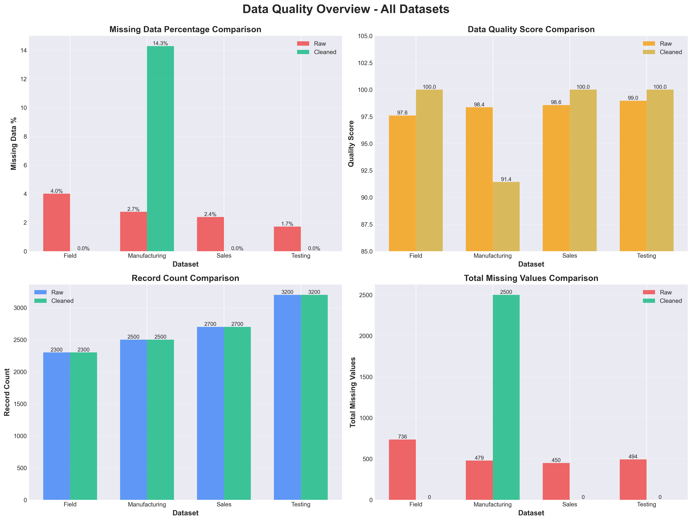
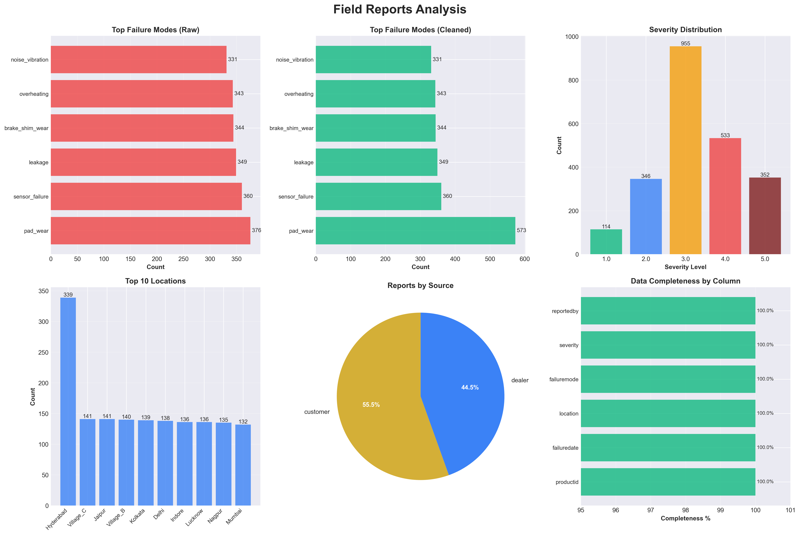
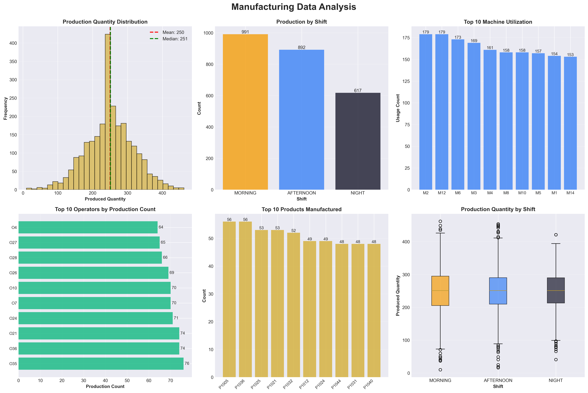
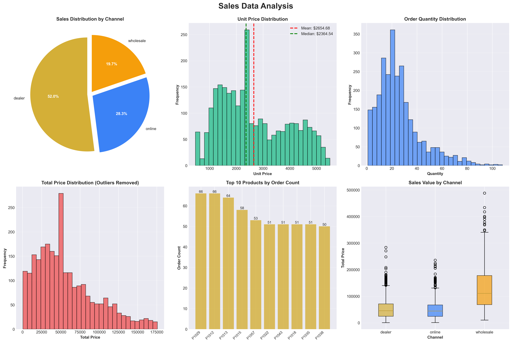
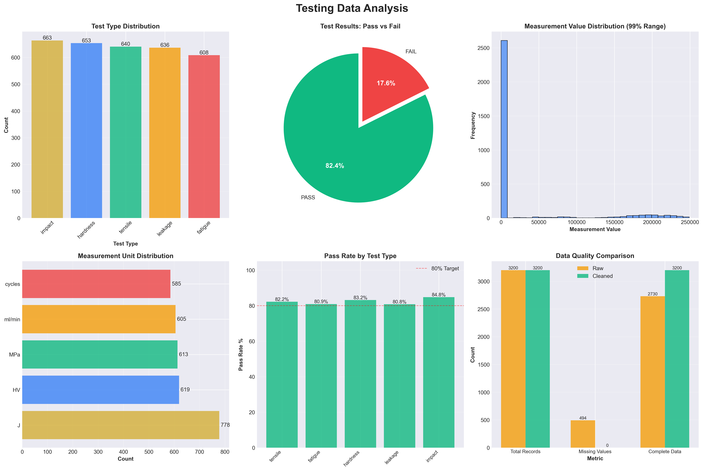

10,700
Total Records
4
Datasets
100%
Data Completeness
97.4%
Avg Quality Score
Key Findings
Processed 10,700 records across 4 datasets
Maintained 10,700 clean records with zero data loss
All datasets achieved 100% data completeness after cleaning
All missing values successfully handled across all datasets
Data Quality Overview
Comprehensive Summary

Field Reports Analysis
2,300
Total Reports
100%
Data Quality
6
Failure Types
16
Locations
Field Reports Insights
Excellent data quality after cleaning
Most common failure mode: pad_wear (573 occurrences)
Geographic hotspot: Hyderabad (339 reports)
Detailed Field Analysis
Manufacturing Data Analysis
2,500
Production Batches
250
Avg Production Qty
3
Shifts
40
Operators
Manufacturing Insights
Average production quantity: 250 units per batch
Morning shift has highest production volume (991 batches)
Detailed Manufacturing Analysis
Sales Data Analysis
2,700
Total Orders
$2,655
Avg Unit Price
$68,044
Avg Order Value
3
Sales Channels
Sales Insights
Total revenue: ~$183.7 million
Primary sales channel: dealer (1,404 orders - 52%)
Detailed Sales Analysis
Testing Data Analysis
3,200
Total Tests
82.4%
Pass Rate
5
Test Types
100%
Data Quality
Testing Insights
Test pass rate: 82.4% (2,637 passed out of 3,200)
All missing values successfully handled
Detailed Testing Analysis
Raw vs Cleaned Data Comparison
Field Reports
Records
2,300
No loss
Missing Values
736 → 0
100% resolved
Quality Score
97.6 → 100
+2.4
Manufacturing Data
Records
2,500
No loss
Avg Production
250 units
Consistent
Sales Data
Records
2,700
No loss
Missing Values
450 → 0
100% resolved
Quality Score
98.6 → 100
+1.4
Testing Data
Records
3,200
No loss
Missing Values
494 → 0
100% resolved
Quality Score
99.0 → 100
+1.0